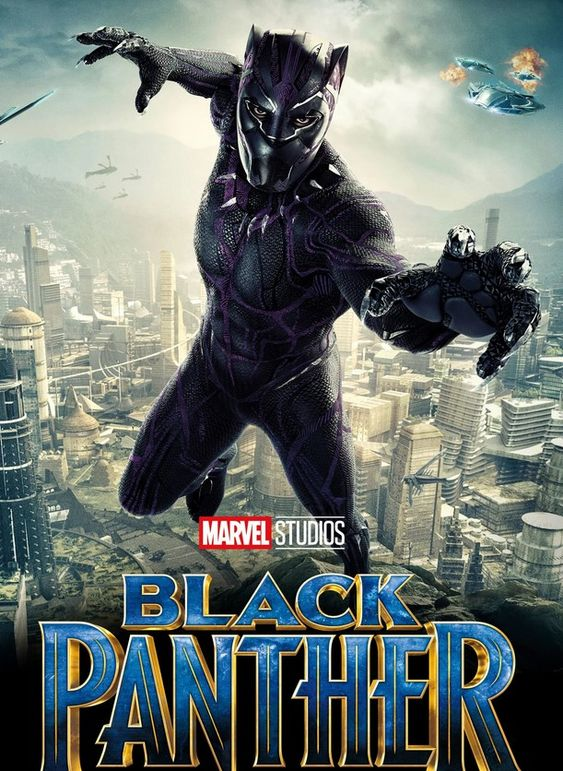

Black Panther
Sebagai Raja baru dari Wakanda, T’Challa (Chadwick Boseman) masih bergumul mengenai perasaannya atas meninggalnya sang ayah, T’Chaka (John Kani). Namun ia kemudian memutuskan untuk meneruskan perjuangan sang ayah. Ketika Wakanda berada dalam ancaman dua musuh berbahaya yang dapat mengancam keselamatan negara, Black Panther berusaha membuktikan diri sebagai raja sejati Wakanda. Ia harus menggunakan kostum barunya serta kekuatannya untuk membela Wakanda dan negara lainnya.
Genre: Aksi, Petualangan
Durasi: 2 jam 15 menit
Sutradara: Ryan Coogler
Tahun Rilis: 2018